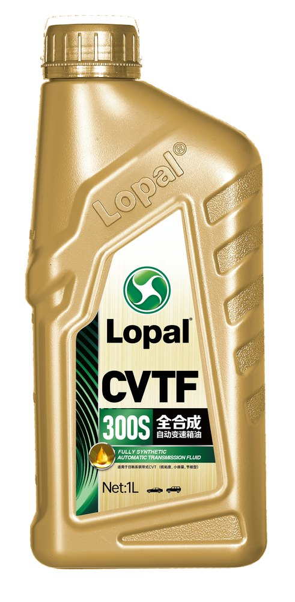

Продукция
Каталог автомобильных масел и жидкостей Lopal наполнен по официальным материалам lopal.cn: 14 продуктов в четырёх категориях. Спецификации указаны с этикеток; документы TDS/MSDS добавляются после согласования.
Продуктовая линейка сайта — только автомобильные масла и технические жидкости: моторные масла, трансмиссионные масла, антифризы, тормозные жидкости. Промышленные масла, AdBlue и автохимия в каталог не включены (по требованию заказчика).
Фильтры по вязкости и спецификации будут активированы после наполнения каталога. Сейчас доступен фильтр по категории.
Моторные масла
Бензиновые и дизельные линейки: Lopal 1 (龙蟠1号) ESF/UP, Lopal SONIC, Lopal Extra. Спецификации — с этикеток официального продукта lopal.cn.

Моторные масла · Lopal 1
Lopal 1 SONIC 9688
SAE 0W-20 · API SP · ILSAC GF-6A · ACEA C5
Подробнее →
Моторные масла · Линейка Lopal 1 (龙蟠1号)
Lopal 1 Advance ESF FE PLUS
SAE 0W-20 · API SQ · ILSAC GF-7A · ACEA C6/C5
Подробнее →
Моторные масла · Линейка Lopal 1 (龙蟠1号)
Lopal 1 Master ESF LT
SAE 0W-30 · API SP · ACEA C2 · ACEA A5/B5
Подробнее →
Моторные масла · Линейка Lopal 1 (龙蟠1号)
Lopal 1 Ultra ESF
SAE 5W-30 · API SP · ACEA C3
Подробнее →
Моторные масла · Линейка Lopal 1 (龙蟠1号)
Lopal 1 Ultra UP FE
SAE 0W-20 · API SP · ILSAC GF-7A
Подробнее →
Моторные масла · Дизельные · Lopal Extra (龙蟠赠程)
Lopal Extra K10
SAE 10W-40 · API CK-4 · дизель
Подробнее →Трансмиссионные масла
Жидкости ATF, DCTF и CVTF для автоматических, роботизированных (DCT) и бесступенчатых (CVT) трансмиссий; трансмиссионное масло API GL-5 для тяжёлых режимов.

Трансмиссионные масла · ATF для АКПП
Lopal ATF 9800
Полный синтетик · ATF · для АКПП
Подробнее →
Трансмиссионные масла · DCTF для роботизированных КПП
Lopal DCTF 72X
Полный синтетик · DCTF · сухое/мокрое сцепление
Подробнее →
Трансмиссионные масла · CVTF для вариаторов
Lopal CVTF 300S
Полный синтетик · CVTF · для CVT
Подробнее →
Трансмиссионные масла · Трансмиссионное масло (齿轮油)
Lopal DuraGear G500
API GL-5 · высоконагруженные передачи
Подробнее →Антифризы
Готовые охлаждающие жидкости: C05 — для легковых автомобилей, C08 — для коммерческого транспорта. Органические технологии LEC-II и HEC-II.

Тормозные жидкости
Синтетические тормозные жидкости DOT 4 и DOT 5.1 с фирменной технологией ULP TRANSFER.

В выбранной категории пока нет карточек.